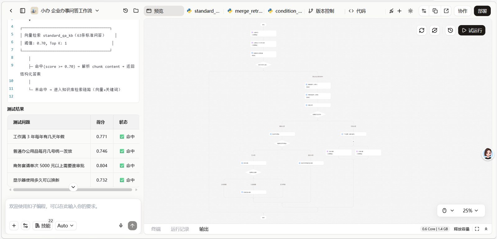

把企业内部琐碎、重复的「办事咨询」交给 AI，让员工 7×24 自助答疑、让 HR 从重复答疑中解脱出来。
1000+ 人企业内部，每天有一半行政咨询是"上周已答过"的同类问题。这是 HR 最耗心力、却最不创造价值的工作。
每一家成长型企业都会遇到的「行政咨询瓶颈」：
同一条制度，不同 HR 给出的解释差异 30%+，员工到处求证。
员工报账、请假、报销遇问题，平均要等 4.5h 才得到回复，协作阻塞。
"年假怎么算""加班怎么报"等高频问题每周被问 30+ 次。
老 HR 离职后，制度问答经验断层，新人 HR 接电话手忙脚乱。
应用层做入口、AI 能力层做推理、数据层做沉淀。鼠标悬停任意一层，看它在系统里承担什么角色。
嵌入式对话入口，员工不跳出原有工作流即可问。
RAG + Agent 多级协同，含规则校验与三级兜底。
制度文档 + 结构化 QA 双轨知识源，支撑检索与版本管理。
标准 QA 优先命中 → 双路混合检索 → 规则冲突校验 → 三级兜底的节点编排

上线后实测回归用例，发现一类反复出现的问题：明明是知识库里的内容，换种说法就不命中；或明明检索到了答案，却输出了兜底话术。下面是完整诊断与修复。
| 实测用例 | 得分 | 实际分支 | 表现 | 根因归类 |
|---|---|---|---|---|
| TC-S01 工作满 3 年年假 | 90 PASS | 正常回答 | 5 天 / 1–10 年 准确命中 | — |
| TC-S02 显示器换新 | 100 PASS | 正常回答 | 更换周期 / 维修准确 | — |
| TC-S03 商务宴请标准 | 90 PASS | 正常回答 | 200 / 5000、审批层级命中 | — |
| TC-S04 新员工办公用品 | 60 FAIL | 正常回答（检索 + LLM） | 未列出具体物品清单 | 守门人① 字符重叠非语义，改写稀释重叠比；同义词字段未参与匹配 |
| TC-S05 病假工资 | 60 FAIL | 全局兜底「未明确规定」 | 库里有答案却走了兜底 | 守门人②③ 短条款被启发式误杀 + 路由按向量分划档，与「能否回答」脱节 |
| TC-S06 加班打车票据 | 60 FAIL | 标准 QA 命中但回答为空 | 命中后返回空串 | 守门人① 命中后未做空值兜底 |
| TC-K01 请客吃饭花 2000 | 68 FAIL | 正常回答（部分命中） | 召回宴请标准却没做数值比较 | 守门人②③ 有答案仍漏判；未做「2000 < 5000 无需总经理审批」比较 |
架构设计：标准问答优先 + 双路混合检索 + 规则冲突校验 + 三级分级兜底，每个分支都有明确路由依据，而非凭相似度硬答。
流程说明（与代码主图 1:1 对应）：
内置 63 条脱敏制度问答，前端本地语义检索模拟真实全流程（标准 QA 直答 / 混合检索 / 兜底）。回答下方可展开「检索召回 Top3」与「运行链路」，看看这次提问走了哪条路。
同一个问答任务，从「关键词匹配」到「LLM 检索增强」，实测准确率的变化
* 118 条分层测试用例实测（L1 100% / L2 93.1% / 整体 91.5%），详见「07 / 质量评测」
12 类维度、118 条用例、3 级优先级——把"AI 表现波动"压成可量化的工程指标。
四份可交付物：标准 PRD / 全场景测试集 / 工作流源文件 / 分阶段迭代方案。点击预览。
AI 拿走重复答疑，让 HR 去处理真正需要判断的事——入职面谈、组织氛围、员工关系。这是工具该有的位置。
每周节省 HR 答疑时间 10h+，响应时长从 4.5h 缩到实时。
PRD / 测试集 / 工作流均为可复用模板，适配同类企业场景。
从 0 到 1 跑通生产环境，最快 2 周可上线，含飞书机器人集成。